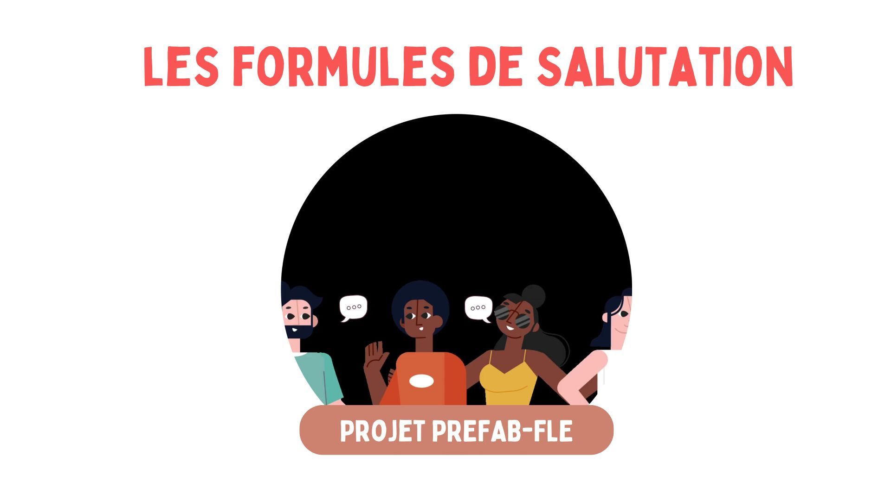
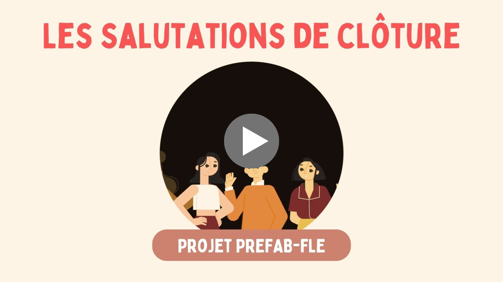

Cet extrait vidéo est issu de corpus FLEURON. Relevé le 7 mai 2025, à l’adresse https://fleuron.atilf.fr/
Cet extrait vidéo est issu de corpus CLAPI FLE. Relevé le 16 avril 2025, à l’adresse http://clapi.icar.cnrs.fr/FLE/
Cet extrait vidéo est issu de corpus FLEURON. Relevé le 7 mai 2025, à l’adresse https://fleuron.atilf.fr/
Cet extrait audio est issu de corpus Les Vocaux. Relevé le 9 mai 2025, à l’adresse https://www.atilf.fr/ressources/corpus-les-vocaux/
Cet extrait audio est issu de corpus FLEURON. Relevé le 22 mai 2025, à l’adresse https://fleuron.atilf.fr/
Cet extrait audio est issu de corpus FLEURON. Relevé le 22 mai 2025, à l’adresse https://fleuron.atilf.fr/
Cet extrait audio est issu de corpus FLEURON. Relevé le 22 mai 2025, à l’adresse https://fleuron.atilf.fr/
Cet extrait audio est issu de corpus FLEURON. Relevé le 22 mai 2025, à l’adresse https://fleuron.atilf.fr/
Cet extrait audio est issu de corpus Orfeo. Relevé le 12 mai 2025, à l’adresse https://repository.ortolang.fr/api/content/cefc-orfeo/11/documentation/site-orfeo/index.html